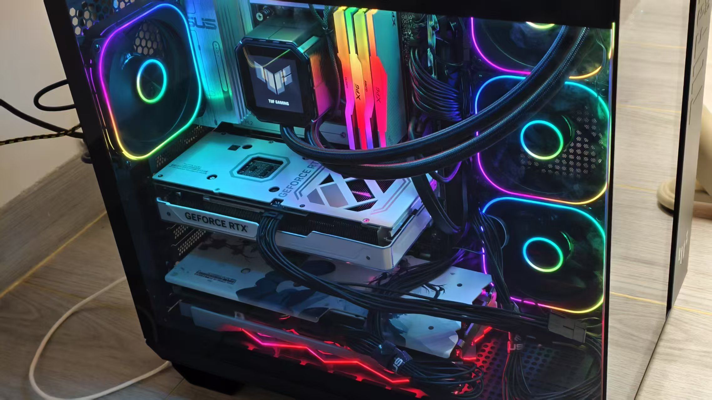
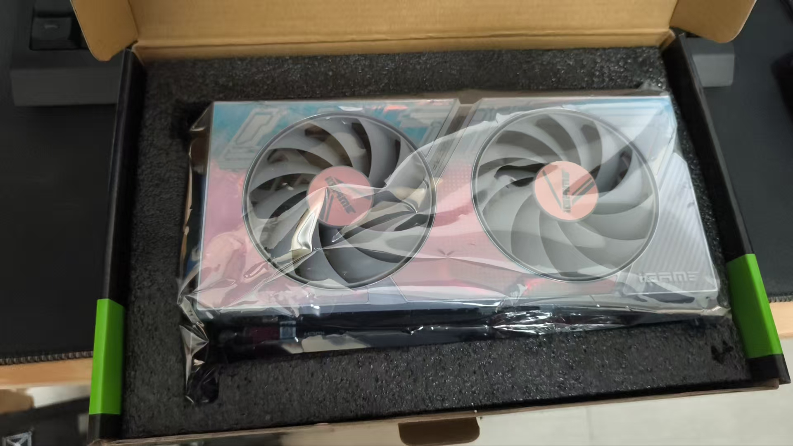
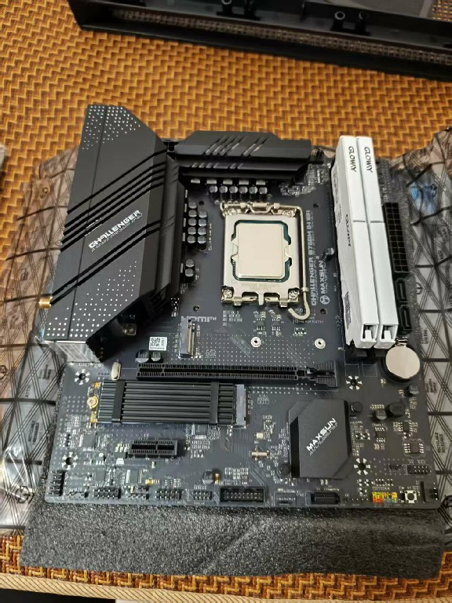
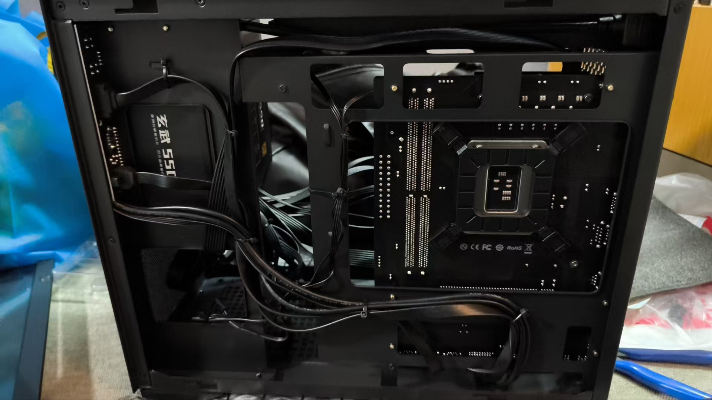
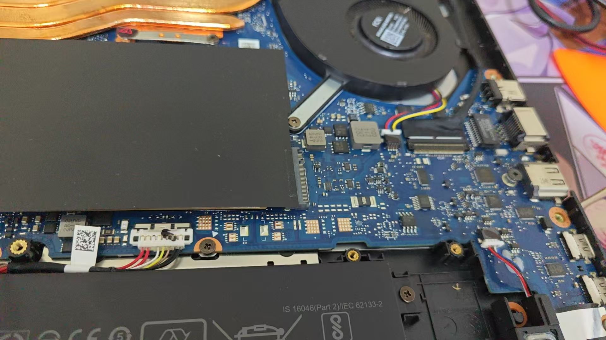
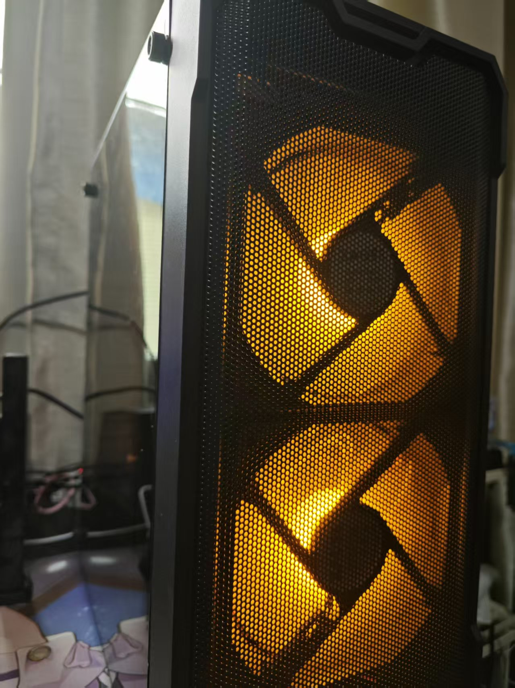
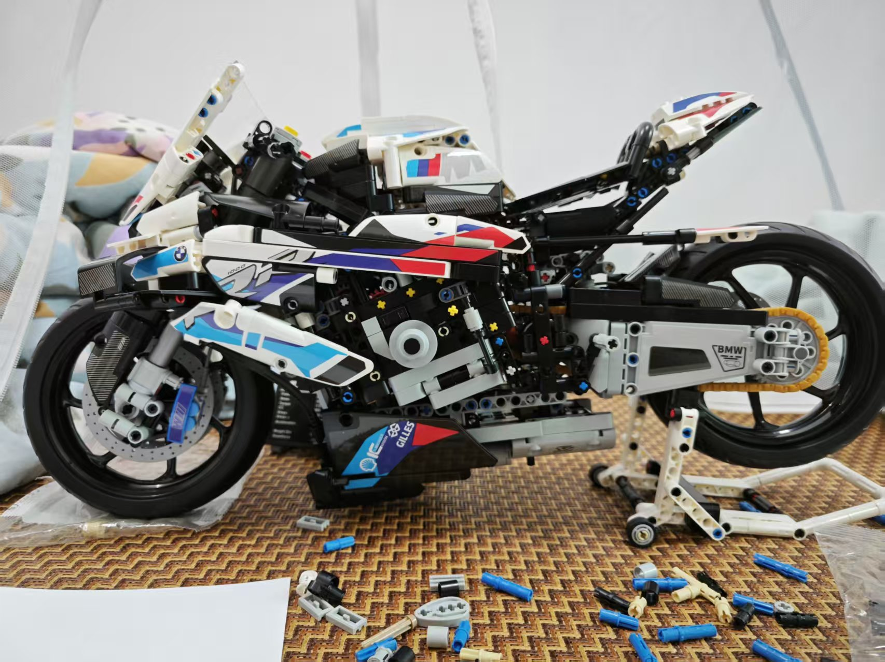
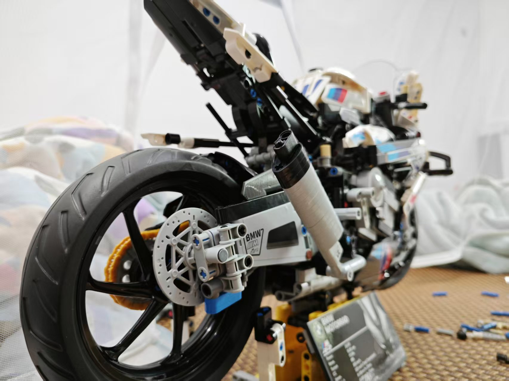
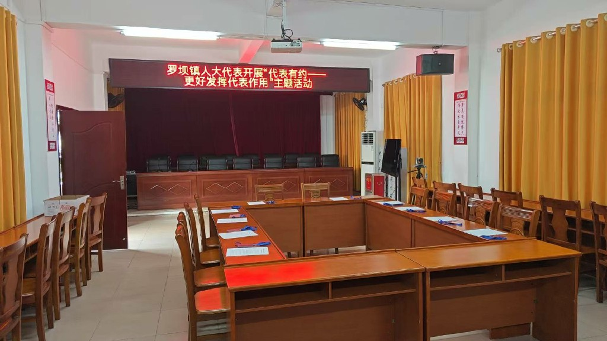

电脑组装
积木拼装
组织活动






电脑组装
具备DIY电脑主机的实操能力，熟悉各类硬件（CPU、主板、显卡、内存等）的适配性与安装流程，能够独立完成从配件选型、组装调试到系统安装的全流程。曾为身边亲友组装/维修电脑20+台，解决各类硬件故障、系统问题，动手能力突出。


积木拼装
爱好积木拼装，擅长复杂机械组、建筑类积木的拼接，具备耐心和空间思维能力。完成多款高难度积木拼装（如乐高机械组、国风建筑积木），拼装过程锻炼了细节把控、逻辑拆解与专注力，成品可作为摆件展示。

组织活动
具备丰富的活动组织协调能力，在职期间组织县镇人大代表学习培训20次、外出视察16次，在校期间参与组织校创新创业比赛。能够独立完成活动策划、人员统筹、流程把控与后续总结，擅长跨部门沟通，确保活动高效落地。